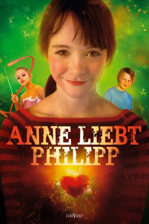

#10069 Anne liebt Philipp
 
 IMDB-Wertung: 6.9 / 10
IMDB-Wertung: 6.9 / 10  Metascore: 0
Metascore: 0 
Anne ist zehn Jahre alt und ein echtes Energiebündel. Keine Frage, dass sie Wikinger viel interessanter findet als Prinzessinnen, die nie die wirklich spannenden Sachen machen dürfen. Doch dann kommt ein neuer Mitschüler in ihre Klasse: Philipp der mit seiner Familie in das gruselige Haus am Ende der Straße gezogen ist. Und ausgerechnet die quirlige Anne verliebt sich Hals über Kopf in den Nachbarsjungen, was ihren Rumtobe-Alltag gehörig durcheinander wirbelt. Denn alle Mädchen lieben Philipp - fatalerweise auch Ellen die mit ihrer hübschen Nase und dem blonden Pferdeschwanz ziemlichen Eindruck auf Jungs macht. Für Anne ist das kein Hinderungsgrund. Schließlich ist in der Liebe alles erlaubt, daran gibt es für sie keinen Zweifel, Es muss nur der richtige Plan her...
Jahr: 2011
Dauer: 83 Minuten
FSK: 6
Land: Norwegen Studio: Farbfilm-VerleihTonspuren:
Untertitel:
Auflösung: 1080p (1920x816) Größe: 6082 MB
Genre: Familie, Mystery
Regisseur: Anne Sewitsky
Drehbuch: Vigdis Hjorth, Kamilla Krogsveen
Soundtrack: Marcel Noll
Darsteller:
- Silje Breivik als Anne's Mother
- Markus Tønseth als Knut's father
- Silje Reinåmo als Mother in Ghost Story
- Maria Annette Tanderø Berglyd als Anne Lunde
- Otto Garli als Jørgen Ruge
- Aurora Bach Rodal als Beate
- Vilde Fredriksen Verlo als Ellen
- Kristin Langsrud als Tone
- Peder Holene als Knut
- Sigurd Saethereng als Einar
- Torkil Høeg als Ole Lunde
- Adrian Holte Kristiansen als Dag
- Anna Jahr Svalheim als Helga
- Emir Mulasmanovic als Luca
- Randolf Walderhaug als Helga's Father
- Terje Ranes als Anne's father
- Birgitte Victoria Svendsen als Beate's grandmother
- Tone Beate Mostraum als Ellen's mother
- Ole Johan Skjelbred-Knutsen als Jørgen's father
- Stella T. Heie als Pavlova
- Francin Anoj Vincent als Syversen
- Morten Faldaas als Teacher
- Siw Anita Johnsen als Rector
- Christoffer Staib als Priest
- Magnus Young Mortensen als Gym Teacher
- Sheenamae Tano als Au pair
- Nala als Larsen - the Dog
- Maja Zachariassen Lay als Therese
- Emily Bowen als Ellen
Datei: X:\2011(A-F)\Anne liebt Philipp (2011, FSK6, 1920x816).mkv seit 26.11.2018
Festplatte: HD 2010(G-Z)-2011(A-F)
 Es gibt insgesamt 86 Filme in der Gruppe '2011(A-F)'
Es gibt insgesamt 86 Filme in der Gruppe '2011(A-F)'